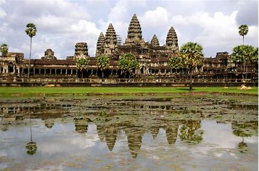
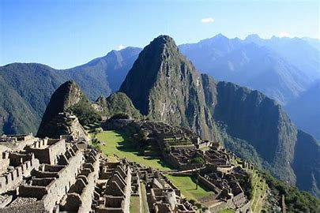

世界遺産誕生の歴史
1960年代：UNESCOがヌビア遺跡(エジプト)を保存するキャンペーンを行う。
1972年：第17回UNESCO総会にて、「世界の文化遺産及び自然遺産の保護に関する条約(世界遺産条約)」が採択
→2022年5月現在、世界遺産条約の締結国は194か国
"世界遺産は、私たち一人ひとりが守り伝えていくべき人類共通の遺産"
世界遺産リスト
世界遺産は顕著な普遍的価値を有する「有形の不動産」を対称とし、3つの種類がある
- 文化遺産：記念物、建築物群、遺跡、文化的景観など
- 自然遺産：地形や地質、生態系、絶滅の恐れのある動植物の生息・生育地など
- 複合遺産：文化遺産と自然遺産の両方の価値を兼ね備えているもの
1.文化遺産の例
- アンコール
- 
- 登録年：1992年
- 国：カンボジア王国
2.自然遺産の例
3.複合遺産の例
- マチュピチュの歴史保護区
- 
- 登録年：1983年
- 国：ペルー共和国
世界遺産がもたらす社会的効果
参考文献
https://www.unesco.or.jp/activities/isan/about-worldheritage/
https://www.mofa.go.jp/mofaj/gaiko/culture/kyoryoku/unesco/isan/world/isan_1.html